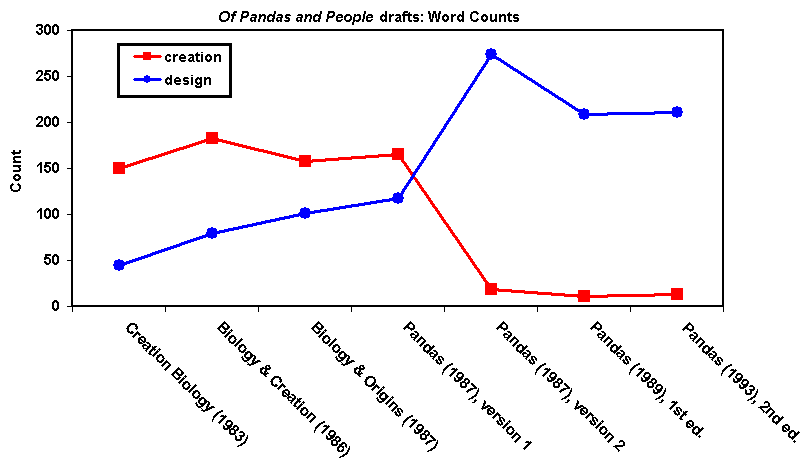
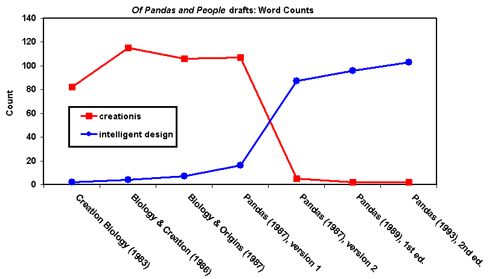

LA COUR: Asseyez-vous, s'il vous plaît. Nous sommes de retour au procès-verbal. Monsieur Muise, avez-vous des questions supplémentaires sur le voir dire ?
M. MUISE : Nous en avons encore quelques-uns, Votre Honneur, et nous allons terminer cela dans un court délai.
LA COUR : D'accord.
Q. Madame, d'après ce que vous avez témoigné ce matin, il est clair que le témoignage que vous comptez offrir cet après-midi sera en grande partie basé sur des énoncés faits par certains partisans du dessein intelligent, n'est-ce pas exact ?
A. Il est basé sur ma consultation de leurs écrits et des choses à leur sujet dans lesquelles ils sont cités.
Q. Madame, êtes-vous d'accord avec le témoignage du Dr. Miller selon lequel tout ce qu'un scientifique dit n'est pas de la science ?
A. Les scientifiques font parfois beaucoup d'affirmations quand ils ne parlent pas en tant que scientifiques, mais simplement en tant que personnes.
Q. Dans le témoignage que vous comptez présenter ce matin et cet après-midi, Madame, comment cette cour saura-t-elle quand vous faites référence aux affirmations scientifiques faites par les partisans du dessein intelligent et aux affirmations philosophiques ou théologiques faites par les partisans du dessein intelligent ?
A. Cela semble dépendre de la question. La question devrait préciser, puis je devrai préciser.
Q. N'est-il pas vrai dans votre rapport que vous n'avez fait aucun effort pour distinguer ces types d'affirmations ?
A. Je ne suis pas tout à fait sûr, je suis désolé, de ce que vous me demandez.
Q. Eh bien, n'est-il pas clair dans votre rapport, et je suppose alors que votre témoignage subséquent d'aujourd'hui ne précise pas la distinction entre les motivations religieuses de certains partisans du dessein intelligent, les implications religieuses du dessein intelligent, et le dessein intelligent en tant que science, n'est-ce pas correct ?
A. J'examine la nature du dessein intelligent dans le mouvement du dessein intelligent. Cela inclut un certain nombre de choses. Cela inclut, de manière la plus fondamentale, la substance du mouvement lui-même, l'essence de ce qu'il est, mais implique également les motivations des personnes qui mènent ce mouvement et les objectifs qu'elles se sont fixés. Donc, j'examine tout cela, de manière la plus fondamentale la nature du dessein intelligent et le mouvement qui est utilisé pour le mettre en œuvre.
Q. Mais vous ne répondez pas aux affirmations scientifiques du dessein intelligent, par exemple la complexité irréductible ou l'information spécifiée complexe, n'est-ce pas ?
A. Ce n'est pas ce que j'ai été chargé de faire dans mon rapport.
Q. Est-il donc exact de dire que votre concentration porte sur les affirmations philosophiques et théologiques faites par les partisans du dessein intelligent ?
A. Oui. Si je puis dire, dans mon livre, nous examinons bien l'affirmation scientifique. Mon co-auteur est un scientifique, donc j'ai une source d'expertise à laquelle je peux me référer chaque fois que j'ai besoin d'aborder ce sujet, mais ce n'est pas mon domaine principal.
Q. Encore, madame, vous témoignez sur votre rapport, pas sur votre livre, n'est-ce pas ?
A. C'est exact.
M. MUISE : Votre Honneur, nous n'avons plus de questions, et nous demandons l'exclusion de ce témoin pour témoigner en tant qu'expert dans cette affaire.
M. ROTHSCHILD : Puis-je poser une question sur la redirection du voir dire ?
LA COUR : Vous pouvez, et ensuite nous entendrons les arguments sur les qualifications. Allez-y.
EXAMEN REDIRIGÉ SUR LES QUALIFICATIONS
Q. Docteur Forrest, est-ce que, selon votre avis, votre opinion, le dessein intelligent est, à son cœur, une affirmation philosophique et théologique ?
A. À mon avis, au cœur du dessein intelligent se trouve une croyance religieuse.
M. ROTHSCHILD : Aucune autre question sur le choix des jurés, Votre Honneur.
LA COUR : Y a-t-il un recroisement sur les qualifications ?
M. MUISE : Non, Votre Honneur.
LA COUR : Très bien. Vous objectez donc au témoignage de l'expert aux fins énoncées par M. Rothschild, et nous avons énoncé et réénoncé ces fins. Il n'y a donc pas besoin de le faire à ce stade. Je vous autorise à développer cet argument si vous le souhaitez.
M. MUISE : Votre Honneur, cette dernière question qu'il vient de lui poser, elle l'a dite lors du voir dire lorsque je lui ai demandé si elle avait une expertise en religion, elle a dit non. Elle a apparemment suivi la nature et l'histoire de ce soi-disant mouvement du dessein intelligent. Elle ne peut pas aborder les affirmations scientifiques de celui-ci. La question au cœur de ce procès est de savoir si le dessein intelligent est de la science.
LA COUR : Comme vous l'avez formulé.
M. MUISE : Eh bien, Votre Honneur, je pense que leur affirmation selon laquelle ce n'est pas de la science est erronée. Elle n'a fait aucun effort pour aborder la composante scientifique, car elle ne peut pas le faire. Elle n'a aucune expertise. Elle s'est concentrée sur les affirmations philosophiques et théologiques des partisans du dessein intelligent.
LA COUR : Eh bien, le problème avec cela est que c'est une question à ne pas ignorer, mais une autre question, et je comprends que ces questions fonctionnent main dans la main dans certains cas, est la base religieuse de, ou la prétendue base religieuse du mouvement du dessein intelligent telle que présentée par le témoin. Pourquoi n'est-elle pas compétente pour témoigner à ce sujet ?
M. MUISE : Votre Honneur, les fondements religieux de William Dembski, qui est à la fois théologien, philosophe et mathématicien, ne sont pas plus pertinents que les fondements interreliés de Richard Dawkins pour déterminer si l'évolution est --
LA COUR : Je pourrais être d'accord avec cela, mais cela renvoie à ce que j'ai dit plus tôt, Monsieur Muise, à savoir que vous pouvez avoir des objections quant à des parties spécifiques de son témoignage, et je le répète, car je pense qu'il faut le répéter, que rien de ce que je fais en termes d'admission de cette experte, en supposant que je l'admette, ne vous empêchera de le faire. Mais analyser des parties d'un rapport qui pourraient être contestables de cette manière ne vous aide pas en termes de son admissibilité générale en tant qu'experte. Nous parlons de deux choses différentes. Alors, quels autres arguments souhaitez-vous faire sur ce point ?
M. MUISE : Encore une fois, Votre Honneur, comme indiqué dans la dernière question, il n'y a qu'une interrelation ; il n'est pas possible de séparer ces affirmations contestables de ce qu'elle va témoigner. Cela fait partie intégrante de ce qu'elle va opiner, à savoir qu'elle s'appuie sur ce genre d'affirmations contestables, ces déclarations philosophiques et théologiques des partisans. Et donc, le fait qu'elles soient si imbriquées signifie qu'il n'est pas possible pour ce tribunal, ni même pour nous assis ici, lorsque elle formule une affirmation particulière, de distinguer ce qui constitue la base, le matériel sur lequel elle s'appuie pour faire cette affirmation, et ces matériaux sont contestables et sapent la fiabilité. Et si je puis faire une dernière remarque - -
LA COUR : Eh bien, les matériaux eux-mêmes peuvent constituer des ouï-dire. Nous avons déjà emprunté ce chemin. 703 n'exclut pas les ouï-dire. Dans un effort d'équité, j'ai dit que les matériaux devaient être produits en partie afin que nous puissions nous assurer que vous avez l'opportunité équitable de discerner si oui ou non, et je suis assez certain que vous l'avez fait auparavant, et donc c'est principalement pour mon bénéfice de voir si oui ou non les déclarations sont sorties de leur contexte, ce qui serait une façon de mesurer cela, particulièrement lorsque vous analysez, en utilisant ce mot à nouveau, une déclaration particulière, et je suis parfaitement disposé à le faire sur une objection de votre part. Mais dire que ce témoin, qui est engagé dans un exercice académique et a produit une œuvre publiée, ne peut pas témoigner de manière générale, sous réserve d'une objection bien placée sur l'histoire du dessein intelligent tel qu'il est apparu, j'ai du mal à voir pourquoi elle ne peut pas.
M. MUISE : Et encore quelques points à ce sujet, Votre Honneur. En ce qui concerne le contexte, c'était l'objet de certaines de mes dernières questions, car si le contexte est une affirmation philosophique ou théologique émise par un partisan, c'est ce contexte qui la rend irrelevante, et c'est là l'essentiel.
LA COUR : Voulez-vous dire en ce qui concerne leurs croyances personnelles ?
M. MUISE : C'est exact, Votre Honneur.
LA COUR : Eh bien, et cela doit être lié à la -- nous parlons de manière abstraite. Une simple déclaration de foi émise par un individu particulier, isolée, non liée d'une manière quelconque à une analyse de, non seulement une analyse mais non liée aux travaux de cet individu ou de ces individus, traités, ouvrages publiés tels qu'ils se rapportent au dessein intelligent, qui peut en effet être objectionnable. Je ne l'empêche pas. Et ce rapport peut contenir des exemples de cela. Mais encore une fois, je ne pense pas que cela disqualifie le témoin en tant qu'expert.
M. MUISE : Juste deux derniers points – eh bien, c'est lié, mais je pense qu'il s'agit d'un dernier point, Votre Honneur, à savoir que selon son témoignage, il n'y a aucune preuve que quiconque dans le conseil scolaire sache quoi que ce soit à ce sujet Document du coin qui constitue la base de son opinion, ni que toute personne du district scolaire de la zone de Dover ait été consciente ou agisse sous la direction de ce mouvement du dessein intelligent conspirationniste qui opère quelque part ailleurs.
LA COUR : Mais c'est du poids et de la pertinence. Ce n'est pas des qualifications d'expert, n'est-ce pas ?
M. MUISE : Eh bien, encore une fois, Votre Honneur, je pense qu'il s'agit de plus que de simples qualifications. Il y a une question de fiabilité associée à cette 703 --
LA COUR : Non, l'objectif serait alors, je pense, l'effet, du point de vue du demandeur. Ayant admis le témoignage, vous pouvez bien sûr soutenir que, pour le volet de l'effet, par exemple, et non pour le volet de l'intention, et le fait de ne pas lier les éléments témoignés aux membres individuels du conseil scolaire rend le témoignage irrelevante et qu'il ne devrait pas être pris en considération par la cour. Mais nous n'y sommes pas, et nous ne sommes pas dans votre affaire et je ne pense pas que cela concerne les qualifications. Donc vous transformez votre argument sur les qualifications en un argument sur la pertinence, et je ne pense pas que cela soit approprié à ce stade.
M. MUISE : Merci. Aucun autre argument, Votre Honneur.
LA COUR : Je vais donc admettre l'expert, à nouveau sous réserve d'objections opportunes de la défense, dans le but énoncé par M. Rothschild, qui est un expert en naturalisme méthodologique et en l'histoire et la nature du mouvement du dessein intelligent, et M. Rothschild, vous pouvez procéder.
EXAMEN DIRECT SUR LE TÉMOIGNAGE D'UN EXPERT
Q. Bonjour encore, Dr. Forrest ?
A. Bonjour, encore.
Q. Avez-vous une opinion sur le fait que le dessein intelligent est une forme de créationnisme ?
A. Oui.
Q. Et quelle est cette opinion ?
A. Mon opinion est que c'est le créationnisme.
Q. La juridiction dans cette affaire a soutenu que le créationnisme se limite à une interprétation littérale du récit de la Genèse de l'Ancien Testament de la Bible. Êtes-vous d'accord que ce soit une définition appropriée du créationnisme ?
A. Non, je ne suis pas d'accord.
Q. Que disent les créationnistes eux-mêmes sur ce sujet ?
A. Les créationnistes eux-mêmes reconnaissent les variations entre eux. Ils reconnaissent la position de la Terre jeune. Ils reconnaissent la position de la Terre ancienne. Cela est bien connu parmi les créationnistes eux-mêmes.
Q. Avez-vous une opinion sur le fait que le dessein intelligent est de nature religieuse ?
A. Oui.
Q. Et quelle est cette opinion ?
A. Qu'il est essentiellement religieux.
Q. Sur quoi basez-vous votre opinion selon laquelle le dessein intelligent est une forme de créationnisme ?
A. Selon les déclarations des propres dirigeants du mouvement, ils l'ont parfois désigné ainsi.
Q. Quelque chose d'autre ?
A. Oui. Leur rejet de l'évolution au profit d'une intervention surnaturelle dans le processus de la nature et au profit de la création spéciale des formes de vie.
Q. Votre examen de l'histoire de la rédaction de Of Pandas and People a-t-il confirmé votre conclusion selon laquelle le dessein intelligent est du créationnisme ?
A. Oui.
Q. Sur quoi basez-vous votre opinion selon laquelle le dessein intelligent est une proposition religieuse ?
A. Sur les déclarations de ses dirigeants. Ils l'ont ainsi définie.
Q. Nous allons aborder ces déclarations en détail, mais Phillip Johnson a-t-il fait des déclarations dans ce sens ?
A. Oui, il l'a fait.
Q. Matt, pouvez-vous faire apparaître le document 328 ? Reconnaîtriez-vous ce document ?
A. Oui.
Q. Qu'est-ce que c'est ?
A. Il est intitulé « Commencer une conversation sur l'évolution. ». Il s'agit d'une critique d'un livre de Dell Ratzsch. Ceci est écrit par Phillip Johnson.
Q. Et docteur Forrest, avez-vous, dans la préparation de votre témoignage, mis en évidence des passages de certains des documents que nous allons utiliser comme pièces à conviction aujourd'hui ?
A. Oui, je l'ai.
Q. Avez-vous fait cela pour cette exposition ?
A. Oui.
Q. Matt, pourriez-vous aller à l'énoncé mis en évidence dans cet exposé ? Et le Dr Forrest, pourriez-vous lire cet énoncé à l'acte, en utilisant des guillemets pour indiquer lorsque vous citez le document ?
A. Oui.
M. MUISE : Nous contestons cette affirmation comme étant du témoignage indirect.
LA COUR : Eh bien, vous devrez faire mieux que cela.
M. MUISE : Encore une fois, Votre Honneur, cela porte sur le fond. Il ne s'agit pas d'une affirmation faite par, une affirmation scientifique. C'est, au mieux, une affirmation philosophico-théologique faite par quelqu'un qui se dit partisan du dessein intelligent, et comme elle l'a dit lors de son témoignage direct, Phillip Johnson est un avocat. Il n'est pas scientifique.
LA COUR : Nous devrons le considérer dans le contexte de l'ensemble du passage et présumer que, ce que je dois voir sur l'écran, vous devrez me fournir la pièce à conviction.
M. ROTHSCHILD : Votre Honneur, c'est l'exposition --
LA COUR : Pourquoi ne pas --
M. ROTHSCHILD: - - 328.
LA COUR : Cela m'est utile.
M. ROTHSCHILD : Puis-je répondre au point de M. Muise ?
LA COUR : Laissez-moi le lire en premier.
M. ROTHSCHILD : Bien sûr.
LA COUR : D'où est tiré cela ?
M. ROTHSCHILD : Il s'agit d'un article tel que le Dr Forrest l'a décrit, écrit par Phillip Johnson.
LA COUR : Laissez-moi voir à nouveau la page de titre de cela. (Brève pause.)
LA COUR : L'objection est rejetée.
Q. Pourriez-vous lire ce passage aux débats, s'il vous plaît ?
A. Oui. « Mes collègues et moi parlons de réalisme théiste, ou parfois de simple création, comme du concept définissant notre mouvement. Cela signifie que nous affirmons que Dieu est objectivement réel en tant que Créateur, et que la réalité de Dieu est tangiblement enregistrée dans des preuves accessibles à la science, en particulier en biologie. »
Q. Et d'après votre lecture de cet article, quel est le mouvement auquel M. Johnson faisait référence ?
A. Il fait référence au mouvement du dessein intelligent.
Q. Ceci est un exemple des déclarations des dirigeants du mouvement du dessein intelligent indiquant la nature religieuse de la proposition ?
A. Oui.
Q. En préparant votre rapport d'expert et en vous préparant à témoigner aujourd'hui, avez-vous examiné des affaires judiciaires antérieures relatives à l'enseignement de l'évolution ?
A. Oui.
Q. Et pourquoi avez-vous fait cela ?
A. Parce qu'il offre une bonne compréhension de l'histoire de cette question et montre les objections religieuses à l'enseignement de l'évolution dans ces cas.
Q. Y avait-il une opinion qui était particulièrement importante pour votre opinion ?
A. Oui.
Q. Et qu'était-ce ?
A. C'était le Edwards vs. Aguillard, lecture de la Cour suprême des États-Unis en 1987.
M. MUISE : Votre Honneur, nous allons faire objection à tout témoignage relatif à des affaires judiciaires ou à des décisions antérieures. Elle n'est pas avocate dans cette affaire. Il n'y a qu'un seul expert juridique dans cette salle d'audience, et c'est le juge, et ce n'est pas ce témoin.
LA COUR : Bien sûr, cela reste à voir. Que pouvez-vous dire à ce sujet ?
M. ROTHSCHILD : Votre Honneur, elle ne va pas discuter de cette affaire judiciaire. Elle va en discuter en tant que fait historique important pour le mouvement du dessein intelligent, y compris, et c'est mon -- nous allons aborder cela dans les prochaines questions, un jurement déposé dans cette affaire en soutien à la science créationniste par Dean Kenyon, l'auteur de Pandas.
LA COUR : Eh bien, dans la mesure où M. Muise soumet une objection de protection quant à une interprétation juridique de l'affaire, vous ne pourrez pas aller là-dessus, et je vais maintenir l'objection sur cette base. Les questions jusqu'à présent concernant l'existence de l'affaire, la dénomination de l'affaire, ne sont pas susceptibles d'objection, mais je comprends, je pense, que la base de votre objection est qu'elle ne peut pas interpréter juridiquement l'affaire. J'entendrai une autre objection, je vous accorderai une objection continue dans cette veine, mais nous n'avons pas encore atteint ce point. Vous pouvez continuer.
Q. Quelle juridiction a rédigé l'opinion dans Edwards que vous avez lu ?
A. La Cour suprême des États-Unis.
Q. Et savez-vous quand la cour a rendu son avis ?
A. 19 juin 1987.
Q. Je ne vous demande pas de l'interpréter, mais quelle est votre compréhension de ce que la cour a décidé dans cette affaire ?
M. MUISE : Objection, Votre Honneur.
M. ROTHSCHILD : Votre Honneur, il s'agit simplement de contexte.
LA COUR : Non, je vais maintenir cette objection. Je pense que cela pose problème, et je pense en outre que la cour est capable de comprendre cette affaire. Donc, c'est probablement une question inutile de toute façon. Continuons.
Q. Quelle est l'importance de la décision Edwards pour les opinions que vous allez rendre aujourd'hui ?
A. Parce que l'un des témoins experts était le Dr. Dean H. Kenyon, qui est co-auteur de Pandas.
Q. Et le Dr Kenyon a-t-il déposé un serment en faveur de l'enseignement de la science créationniste dans cette affaire ?
A. Oui, il l'a fait, en 1986.
Q. Avez-vous examiné cet affidavit ?
A. Oui.
Q. Matt, pourriez-vous faire apparaître le document 418 ? Je m'excuse, le texte est un peu difficile à lire, mais reconaissez-vous ce document ?
A. Oui.
Q. Qu'est-ce que c'est ?
A. C'est le déposition du Dr Kenyon.
Q. Avez-vous mis en évidence des parties de ce document qui sont importantes pour votre opinion sur le dessein intelligent ?
A. Oui.
M. ROTHSCHILD : Matt, pourriez-vous aller au premier, pourriez-vous en fait mettre en surbrillance le titre afin que nous puissions voir clairement qu'il s'agit d'un affidavit ? Je pense que vous devez descendre un peu -- là, nous y sommes.
M. MUISE : Nous objectons à nouveau sur la base de la rumeur pour tout témoignage relatif à ce affidavit, cette déclaration extra-judiciaire émise par M. Kenyon.
LA COUR : Encore une fois, vous devrez faire mieux qu'une objection basée sur une ouï-dire basique, et il s'agit également d'un affidavit qui semble avoir fait partie des documents du dossier dans cette affaire. Maintenant, est-il peu fiable ? Avez-vous raison de douter de sa véracité ?
M. MUISE : Très bien, Votre Honneur, encore une fois, en ce qui concerne il s'agit d'un affidavit déposé dans une affaire judiciaire qui ne traite pas de la question du dessein intelligent. Encore une fois, elle s'appuie sur ces déclarations pour aboutir à un avis qui n'est pas étayé par, vous savez, par cette toile tissée de ces déclarations diverses tout au long du témoignage. Nous allons continuer à faire opposition à toutes les déclarations qui reviennent, Votre Honour, et je demanderai une opposition générale à cet égard, mais --
LA COUR : Eh bien, je ne pense pas qu'une objection de principe va fonctionner pour vous, car vous pouvez avoir des choses particulières que vous voulez dire à ce sujet. Vous devez faire ce que vous devez faire. Je vais rejeter l'objection.
M. ROTHSCHILD : Et, Votre Honneur, nous ne l'introduisons pas pour la vérité de la chose affirmée. Nous l'introduisons parce que ce sont les déclarations du Dr Kenyon, et je voudrais ajouter pour le greffe que la première pièce ayant reçu ce genre d'objection, la pièce 328, est déjà à l'état de preuve. Elle a été introduite par le Dr Pennock, et je ne suis pas sûr pourquoi le Dr Forrest est traité différemment des autres témoins experts dans cette affaire. Pouvez-vous aller au premier passage mis en évidence, Matt ?
Q. Pourriez-vous lire cela dans le procès-verbal, docteur Forrest ?
A. Oui. « Définitions de la science de la création et de l'évolution. La science de la création signifie l'origine par une apparition brutale sous des formes complexes, et inclut la création biologique, la création biochimique ou la création chimique, et la création cosmique. »
Q. Pourquoi cette déclaration dans le témoignage de Dr. Kenyon est-elle importante selon votre avis sur le dessein intelligent ?
A. Cette affirmation est importante car elle reflète la définition dans Pandas.
Q. Et lorsque vous dites que la définition dans Pandas, quel est le terme qui définit Pandas ?
A. Le terme dans Pandas est le dessein intelligent. C'est presque la même définition ici qu'il donne pour la science créationniste.
Q. Et nous allons examiner plus tard certains de ces termes dans Pandas, mais pourquoi ne pas passer au passage mis en évidence suivant ? Pourquoi ne pas lire celui-ci ?
A. « La science de la création n'inclut pas comme éléments essentiels le concept de catastrophisme, un déluge mondial, une origine récente de la Terre ou de la vie à partir du néant, ex nihilo, le concept de temps, ou tout concept tiré de la Genèse ou d'autres textes religieux. »
Q. Pourquoi cela est-il important pour votre opinion ?
A. C'est important car cela reconnaît qu'il existe différents types de créationnisme, qu'il est plus large que le simple créationnisme de la Terre jeune.
Q. Et je pense que nous avons une autre passage surligné, Matt.
A. « Alternative unique à l'explication scientifique, ce n'est pas seulement mon opinion professionnelle, mais celle de nombreux scientifiques évolutionnistes de premier plan, aujourd'hui et par le passé, que la science créationniste et l'évolution constituent l'unique alternative scientifique, l'unique explication scientifique, bien que chacune comprenne une variété d'approches. Soit les plantes et les animaux ont évolué à partir d'une ou plusieurs formes vivantes initiales, l'évolution biologique, soit ils ont été créés, la création biologique. »
Q. Pourquoi est-ce important ?
A. C'est important car il expose ce qui est appelé le modèle dual, ou la vision à deux modèles de l'évolution et de la création, ce qui signifie qu'il considère ces deux-là comme les seules alternatives.
Q. Et pourquoi cela est-il significatif pour la question du dessein intelligent ?
A. C'est significatif ici car en 1986, lorsque le Dr Kenyon a écrit ceci, il travaillait également sur Pandas la même année, et l'approche des deux modèles signifie que si l'idée d'évolution est remise en cause, cela laisse la science créationniste par défaut. Cela indique également que comme il travaillait sur Pandas et que ce livre s'exprime en tant que théoricien du dessein intelligent, il ne voit aucune distinction significative entre les deux, entre la science créationniste et le dessein intelligent.
Q. Je voudrais maintenant parler de la rédaction du livre Of Pandas and People. Quand le livre a-t-il été publié pour la première fois ?
A. 1989.
Q. Et y a-t-il eu une deuxième version publiée ?
A. 1993.
Q. Avez-vous préparé une chronologie pour assister à votre témoignage aujourd'hui sur la question de la création des Pandas ?
A. Oui.
Q. Matt, pourriez-vous afficher la chronologie et placer la décision Edwards et le témoignage de M. Kenyon, le témoignage du Dr Kenyon sur la chronologie, puis pourriez-vous également afficher les deux versions publiées de Pandas en 1989 et en 1993 ? Quelle organisation a créé Of Pandas and People ?
A. Le livre a été créé par The Foundation for Thought and Ethics.
Q. Qui dirige cette organisation ?
A. Le fondateur et président est M. John Buell.
Q. Et que savez-vous de lui ?
A. M. Buell a un temps travaillé pour Campus Crusade for Christ. Puis il a travaillé pour Probe Ministries, et je crois qu'il a quitté Probe afin de fonder, de mettre sur pied The Foundation for Thought and Ethics.
Q. Et qu'est-ce que Probe ministries ?
A. Probe Ministries est un ministère de jeunesse sur les campus. Il fonctionne sur les campus universitaires.
Q. Avez-vous des connaissances sur le fait que M. Buell est un scientifique ?
A. Il n'est pas scientifique.
Q. Avez-vous examiné les déclarations publiques de la fondation qui démontrent sa mission ou son but déclarés ?
A. Oui.
Q. Matt, pourriez-vous faire apparaître la pièce à conviction P-12 ? Reconnaissez-vous ce document ?
A. Oui. Il s'agit des statuts d'incorporation de la Foundation for Thought and Ethics.
Q. Et Matt, pourriez-vous souligner les dates sur ce document ? Et cela indique que les statuts d'incorporation ont été déposés en 1980 et un rapport de suivi en 1993 ?
A. Correct.
Q. Ces articles d'association contiennent-ils une mission énoncée par, ou une description de ce que fait le FTE ?
A. Oui, il y a une description.
Q. Matt, pourriez-vous aller au passage mis en surbrillance ? Et le Dr Forrest, pourriez-vous lire le texte mis en surbrillance sous Articles ?
A. Oui, il s'agit de l'article 5, « Les objectifs pour lesquels la société est constituée sont les suivants : 1) l'objectif principal est à la fois religieux et éducatif, ce qui inclut, sans s'y limiter, la proclamation, la publication, la prédication, l'enseignement, la promotion, la diffusion, la radiodiffusion et toute autre manière de faire connaître l'Évangile chrétien et la compréhension de la Bible, ainsi que la lumière qu'elle jette sur les questions académiques et sociales de notre époque. »
Q. Est-ce que vous considérez que cela annonce un agenda religieux ?
A. Oui, je le fais.
Q. Avez-vous vu d'autres documents préparés par The Foundation for Thought and Ethics qui confirment que, en fait, cette organisation a une agenda principalement religieux ?
A. Oui, je l'ai.
Q. Matt, pouvez-vous faire apparaître la pièce à conviction P-633. Reconnaît-on ce document ?
A. Oui.
Q. Et qu'est-ce que c'est ?
A. Il s'agit d'une publication de 1983 intitulée The Foundation Rationale.
Q. Et qui publie ce document ?
A. Ceci est publié par The Foundation for Thought and Ethics. Le copyright se trouve sous le titre.
Q. Et avez-vous mis en évidence des parties de ce document - -
A. Oui.
Q. -- qui indiquent l'agenda religieux ?
A. Oui.
Q. Et Matt, pourriez-vous aller à la première partie soulignée du document ?
M. MUISE : Votre Honneur, nous faisons objection sur la base du témoignage indirect.
LA COUR : Est-ce que vous faites objection au document, à la référence au document en général, ou à des parties individuelles du document ?
M. MUISE : Eh bien, je comprends qu'elle va commencer à témoigner sur les parties individuelles du document concernant l'indication de M. Rothschild de mettre en évidence certaines sections.
LA COUR : Avant d'aller plus loin, revenons à la première page si je puis me permettre.
LA COUR : Très bien, cette objection est rejetée. Vous pouvez continuer.
Q. Pourriez-vous aller au premier texte mis en évidence, Matt, et pourriez-vous lire ce texte à l'audience et expliquer pourquoi il est important ?
A. Oui.
M. MUISE : Objection à la lecture de cette partie du texte dans le procès-verbal sur la base du témoignage indirect.
M. ROTHSCHILD : Je ne le propose pas pour la vérité, Votre Honneur.
LA COUR : Et l'auteur de ceci est ?
M. ROTHSCHILD : Si vous pouvez aller à la deuxième page, Matt ? Charles Thaxton et John Buell, le président et éditeur académique de la fondation, y compris pendant les périodes où Pandas a été développé.
LA COUR : Avez-vous toute autre objection ?
M. MUISE : Votre Honneur, il s'agit d'un document qui s'authentifie lui-même. Je veux dire, il est bien qu'il puisse lire ce qui y est inscrit, mais il n'y a aucun moyen d'authentifier que c'est en effet ce document.
LA COUR : Eh bien, cela ne s'authentifie pas lui-même, mais ce n'est pas le problème. Vous savez, dans une analyse au titre de l'article 703, il s'agit d'une partie d'un rapport d'expert. Je pense que la question est de savoir si vous ne pensez pas qu'il soit authentique, et non s'il s'authentifie lui-même, car nous ne sommes pas dans une enquête sur la ouï-dire stricte ou dans une stricte enquête sur la ouï-dire. Nous avons déjà parcouru ce chemin, la ouï-dire est admissible. Donc, la partie relative à l'auto-authentification n'est pas la bonne. Maintenant, si vous me dites que vous ne pensez pas que ceci soit réel, si vous me dites que vous pensez qu'il a été altéré, si vous me dites qu'il n'y a aucun moyen pour vous de le savoir, je pourrais envisager cela. Mais vous avez eu le rapport, vous avez eu la possibilité de vérifier, présumément vous avez eu la possibilité d'accéder aux documents FTE. Donc, si c'est autre chose que le fait qu'il ne s'authentifie pas lui-même, je vais rejeter l'objection.
M. MUISE : Eh bien, cela était en réponse au simple fait de montrer sa signature. Mon objection est l'objection du témoignage indirect que nous avons énoncée au début, au commencement de ce témoignage. Il s'agit du contexte. Il s'agit d'une affirmation philosophique, théologique, et non d'une affirmation scientifique.
LA COUR : Eh bien, il s'agit d'une lettre d'information pour clore ce cercle, mais c'est une lettre d'information qui semble à la cour avoir été publiée par The Foundation For Thought and Ethics par M. Buell. La cour sait quelle est la position de M. Buell, et de M. Thaxton. Il n'est pas controversé qu'ils soient les éditeurs du livre Of Pandas and People. Il s'agit d'un ouvrage qui est approximativement contemporain de ce que je pense être la première publication ou autour du moment de la publication du livre, ou du moins s'il la précède, ce n'est pas de beaucoup, je ne suis pas certain, donc je rejette l'objection.
M. ROTHSCHILD : Votre Honneur, une dernière chose. M. Muise fait objection parce que ce sont des énoncés philosophiques et théologiques, et je pense que la plupart de ce dont le Dr Forrest va témoigner le sont sûrement, et c'est la position du demandeur que le dessein intelligent est, à son cœur, un énoncé philosophique, théologique, religieux. Donc, je veux dire, c'est de cela qu'elle est là pour témoigner, donc il ne sera pas surprenant si ce genre d'énoncés constitue, vous savez, le cœur du témoignage du Dr Forrest aujourd'hui.
LA COUR : Eh bien, si vous avez dit cela pour que M. Muise cesse de faire des objections continues, vous allez probablement échouer. Passons donc à autre chose.
Q. Docteur Forrest, si vous pouviez lire cela et expliquer pourquoi c'est significatif pour la question de la mission fondatrice ou de l'agenda.
A. Oui. « De nombreux parents chrétiens, cependant, ne s'inquiètent pas de l'enseignement de l'évolution dans les écoles publiques. Les scores SAT en baisse et l'augmentation de la consommation de drogues, de la violence, de l'avortement et des activités homosexuelles chez les adolescents sont les préoccupations de ces parents. Pourquoi tant de remous concernant l'enseignement de la création dans les écoles publiques, demandent-ils. Comme nous le montrerons, il existe une fine ligne de raisonnement qui se cache généralement lorsque l'on aborde soit l'origine, soit la morale, mais qui relie en réalité ces deux préoccupations. Une fois ce raisonnement compris, il devient évident que non seulement l'enseignement exclusif de l'évolution encourage le rejet de la morale judéo-chrétienne par nos enfants, mais il prépare également les jeunes esprits à recevoir des vues religieuses que ces mêmes parents trouveraient inacceptables. »
Q. Avant d'expliquer la signification, vous avez lu « c'est une fine ligne de raisonnement ». Cela ne disait pas « une fine ligne », mais « une ligne », donc c'est « une ligne de raisonnement », donc --
A. Ai-je inséré le mot « fine » ?
Q. Vous l'avez fait ?
A. Je suis désolé. « Il y a une ligne de raisonnement. »
Q. Si vous pouviez expliquer pourquoi cela est important pour votre opinion concernant l'agenda du FTE ?
A. Cela montre que l'objection de FTE à l'enseignement de l'évolution est qu'il saperait les valeurs morales et les croyances religieuses des jeunes élèves.
Q. Est-ce un thème récurrent dans le mouvement créationniste ?
A. Cela se retrouve dans tout le mouvement créationniste.
Q. Matt, je pense qu'il y a un autre passage que le Dr Forrest vous a demandé de souligner.
A. « Pour comprendre comment cela peut se produire, nous devons reconnaître qu'il existe deux vues fondamentales du monde et de l'homme, le théisme et le naturalisme. Ce sont des catégories philosophiques, non religieuses. On peut aussi les appeler positions métaphysiques, visions du monde ou systèmes d'idées. Philosophe ou non, nous avons tous une telle vision. Le théisme et le naturalisme sont des systèmes de pensée mutuellement exclusifs, comme on peut le voir à partir d'une seule distinction. Le théisme affirme une distinction fondamentale entre créateur et créature, tandis que le naturalisme nie cette distinction et définit la réalité totale en termes de ce monde. »
Q. Pourquoi est-ce important ?
A. C'est très important car l'un des thèmes les plus courants du créationnisme est le rejet du naturalisme pour le juxtaposer comme l'opposé du théisme, et pour cette raison, voir l'évolution comme intrinsèquement athée.
Q. Si vous pouviez souligner un autre passage, Matt ? Pourriez-vous le lire à l'acte, s'il vous plaît ?
A. « C'est pourquoi les chrétiens, en fait tous les théistes, doivent insister sur le fait que, chaque fois que l'on aborde les origines, les écoles publiques doivent permettre l'enseignement des preuves de la création aux côtés de l'instruction sur le concept naturaliste de l'évolution. Si le raisonnement scientifique à la fois pour la création et pour l'évolution était enseigné, il y aurait une égalité exigée par la symétrie des deux vues métaphysiques, le théisme et le naturalisme. Si l'un et l'autre ne sont pas enseignés, ce n'est pas seulement le sujet des origines qui est affecté. L'ensemble de la pensée naturaliste est dotée d'un statut privilégié par l'État, avec le résultat de facto que les jeunes esprits sont préparés à rejeter les approches théistes de la morale et de la religion. En même temps, ils sont préparés à recevoir à la fois le relativisme moral et les diverses religions naturalistes telles que l'unité, le bouddhisme, la scientologie et l'humanisme religieux. »
Q. Avez-vous une compréhension, basée sur ce passage, de la raison pour laquelle les auteurs prônent l'enseignement du créationnisme ?
M. MUISE : Objection. Cela appelle de la spéculation, Votre Honneur.
LA COUR : Je maintiens l'objection.
Q. Nous passons à la prochaine pièce à conviction. Matt, pourriez-vous afficher la pièce à conviction ? Et reconnaissez-vous ce document ?
A. Oui.
Q. Qu'est-ce que c'est ?
A. Il s'agit d'une lettre de collecte de fonds de 1995 écrite par M. Buell.
Q. Et comment ce document est-il tombé entre vos mains ?
A. Ceci est l'un des documents requis par subpoena que FTE a fournis à l'équipe juridique, et l'équipe juridique me l'a transmis.
Q. Avez-vous mis en évidence des parties de cette lettre qui sont importantes pour votre opinion ?
A. Oui.
Q. Matt, pourriez-vous aller au premier passage mis en surbrillance ?
M. MUISE : Votre Honneur, nous faisons objection sur la base du témoignage indirect.
LA COUR : Rejeté.
Q. Cela indique qu'il s'agit d'une discussion sur le livre Pandas ?
A. Oui. Dois-je le lire ?
Q. Je vais lire cela aux actes. « La production du manuel scolaire complémentaire de biologie est déjà achevée. Les enseignants l'utilisent actuellement dans tous les 50 États. Ce livre, Pandas et People, influence favorablement la manière dont l'origine est enseignée dans des milliers de salles de classe des écoles publiques. » C'est ce que M. Buell transmet à ses collecteurs de fonds ?
A. Oui. Il parle du livre Pandas et gens.
Q. Matt, pourriez-vous passer au passage mis en évidence suivant ? Et pourriez-vous le lire aux débats ? Allez à la page suivante où cela se poursuit.
A. « Notre engagement est de voir briser le monopole du curriculum naturaliste dans les écoles. Actuellement, le curriculum scolaire reflète une hostilité profonde envers les vues et les valeurs chrétiennes traditionnelles et inculque aux étudiants cette mentalité par des arguments subtils mais persuasifs. Il ne s'agit pas seulement d'une guerre d'idées, mais de jeunes gens et de la façon dont leurs vies seront façonnées. La situation déplorable actuelle de nos écoles résulte en grande partie du déni de la dignité de l'homme créé à l'image de Dieu. Même les élèves du collège inférieur reconnaissent que s'il n'y a pas de créateur, comme l'enseignent les manuels, alors il n'y a pas de législateur auquel ils doivent répondre, et donc pas de besoin d'un mode de vie moral, encore moins d'un respect pour la vie de leurs semblables. Le message de la fondation est que cela est tout simplement inacceptable.
Q. Que comprenez-vous que M. Buell cherche à transmettre ?
M. MUISE : Objection, cela appelle à de la spéculation.
LA COUR : Le document ne parle-t-il pas pour lui-même ?
M. ROTHSCHILD : Je veux dire, je pense que, sur la base de son examen global des documents et de l'histoire de la rédaction de Pandas, je pense que le Dr Forrest peut donner quelques conclusions utiles à ce sujet. Je pense que le document parle pour lui-même très bien.
LA COUR : Eh bien, sur cette base, je vais maintenir l'objection.
M. ROTHSCHILD : D'accord.
Q. Vous avez mentionné que Dean Kenyon était l'un des auteurs de Pandas ?
A. Oui.
Q. Et il était l'expert dans l' affaire Edwards ?
A. Oui.
Q. Dites-nous ce que vous savez à propos de Dean Kenyon ?
A. Le Dr Kenyon est un biophysicien qui a enseigné à l'université de l'État de San Francisco. Il est l'un des co-auteurs de Pandas. Il est également membre du Center for Science and Culture. Il fait partie du mouvement du dessein intelligent. Il a également rédigé des sections de livres de créationnistes de la Terre jeune dans les années 1970.
Q. Et pouvez-vous nous identifier certains de ces livres ?
A. L'un de ces livres était de Henry Morris et Gary Parker. Je pense que le titre est Qu'est-ce que la science de la création ?
Q. Continuez.
A. Un autre des livres pour lesquels il a écrit une section était écrit par un créationniste de la Terre jeune
Q. Et qui est Henry Morris ?
A. Henry Morris est affilié à l'Institut de recherche sur la création. Il est largement connu comme étant le leader, le chef du contingent créationniste de la Terre jeune aux États-Unis.
Q. Qui est l'auteur supplémentaire, auteur nommé de Pandas ?
Q. Que savez-vous de lui ?
A. Percival Davis est co-auteur de deux ouvrages précédents, tous deux adoptant le point de vue du créationnisme de la Terre jeune. Il a été co-auteur en 1967 avec Wayne Frair de The Case for Creation. Il a été co-auteur de l'édition ultérieure de ce livre avec M. Frair, en 1983, intitulée A Case For Creation.
Q. Matt, pouvez-vous faire défiler l'Exposé . Est-ce la page de couverture de A Case For Creation ?
A. Oui, c'est l'édition de 1983.
Q. Et il fait valoir le cas pour la création d'une Terre jeune ?
A. Oui. Près de la fin du livre, ils se rangent du côté de la vision de la Terre jeune.
Q. M. Davis a-t-il jamais renoncé à son soutien au créationnisme de la Terre jeune avant d'être impliqué dans la rédaction ou d'avoir écrit Pandas ?
A. Monsieur Davis ?
Q. Oui.
A. À ma connaissance, non.
Q. A-t-il, à votre connaissance, jamais renoncé à son soutien au créationnisme de la Terre jeune ?
A. Je ne suis pas au courant qu'il l'ait fait, non.
Q. Qui d'autre a participé à la création de Pandas ? Vous avez mentionné M. Buell, M. Davis et M. Kenyon.
A. L'une des autres personnes impliquées était une dame nommée Nancy Pearcey. Je crois qu'elle était l'une des éditrices contributrices de Pandas.
Q. Et que savez-vous d'elle ?
A. Elle est créationniste de la Terre jeune. Elle est également une membre de longue date du mouvement du dessein intelligent. Elle est membre du Center for Science and Culture.
Q. Et a-t-elle été impliquée dans d'autres publications dont vous ayez connaissance ?
A. Oui.
Q. Et qu'est-ce que cela ?
Autres liens :
|
A. La Newsletter Bible Science.
Q. Et Matt, si vous pouviez faire défiler l'Exposé 634 ? S'agit-il d'un exemple du Journal de la Newsletter de la Bible dont le Dr Pearcey était l'éditeur ?
A. C'est l'édition de mai 1989.
Q. Et Matt, pourriez-vous mettre en évidence la section à droite qui dit « dédié à » ?
M. MUISE : Votre Honneur, nous faisons objection sur la base du témoignage indirect.
LA COUR : Voulez-vous développer votre objection au-delà du témoignage indirect ?
M. MUISE : Encore, Votre Honneur, cela va à -- vous avez un bulletin de nouvelles sur la science biblique. Il y a, je veux dire, le contexte de cela ne correspond pas à ce que, vous savez, ils essaient de prétendre que ce n'est pas de la science. Encore une fois, ils s'appuient sur des affirmations philosophiques et théologiques. Cela provient spécifiquement d'un bulletin de nouvelles sur la science biblique.
M. ROTHSCHILD : Votre Honneur, ce que nous essayons de démontrer, c'est que le livre qui se trouve dans l'école de Dover, Pandas and People, est un livre créationniste, et nous avons diverses formes de preuves, notamment que les auteurs et autres éditeurs impliqués dans la création de ce livre sont des créationnistes clairs et explicites.
LA COUR : L'auteur de cette lettre d'information est-il la même personne qu'un co-auteur ?
M. ROTHSCHILD : Nancy Pearcey l'était, et je pense que le Dr Forrest témoignera, dans la création des Pandas. Elle n'est pas listée comme auteure nommée, mais est une rédactrice contributive, une éditrice du livre, et - -
M. MUISE : Et encore, Votre Honneur, il s'agit de ce que vous dites sur les croyances religieuses privées d'une personne qu'ils mettent dans un bulletin d'information scientifique de la Bible.
LA COUR : Nous verrons si c'est le cas. Je comprends cette objection. Votre objection générale à ce document est rejetée, mais vous pouvez soulever des objections plus précises lorsque nous aborderons les parties de la newsletter autres que la partie mise en évidence, qui est celle où nous en sommes. Ainsi, l'objection à la newsletter en général est rejetée. L'objection à ce passage mis en évidence est rejetée.
Q. Et pourriez-vous lire le passage mis en surbrillance ?
A. Oui. « Dédié à la création spéciale, à l'interprétation littérale de la Bible, au dessein divin et à la finalité dans la nature, à une Terre jeune, à un déluge universel noachique, à Christ comme Dieu et homme, notre sauveur, à une recherche scientifique centrée sur Christ, à l'infaillibilité des Écritures. »
Q. S'agit-il d'un bulletin d'information consacré à la défense du créationnisme de la Terre jeune ?
A. Oui, c'est le cas.
Q. Et, Votre Honneur, pour clarifier un point au dossier, puis-je approcher le témoin ?
LA COUR : Vous pouvez.
Q. Docteur Forrest, je vous remets ce que nous avons marqué P-li, qui est la version de 1993 de Of Pandas and People, et je vous invite à regarder la page indiquée par le petit chiffre romain III, qui comprend les remerciements, et Nancy Pearcey est-elle mentionnée sur cette page ?
A. Oui.
Q. Et que fait-elle mention d'avoir fait ?
A. Sous les éditeurs et les contributeurs, elle est mentionnée comme la personne ayant contribué au chapitre de synthèse.
Q. Merci. Avez-vous une opinion sur le fait que le livre Of Pandas and People est un livre créationniste ?
A. Oui.
Q. Et quelle est cette opinion ?
A. C'est un livre créationniste.
Q. Et pourquoi dites-vous cela ?
A. Premièrement, l'examen du contenu de l'édition de 1993 contient des références à un créateur. Il y a une référence à une intelligence maîtresse. Il y a une référence à un concepteur intelligent qui façonne des formes vivantes à partir d'argile, par exemple, et d'autres choses similaires. Vous avez les critiques habituelles des créationnistes envers la théorie de l'évolution. En plus du contenu du livre lui-même, les brouillons antérieurs de Pandas sont rédigés dans le langage du créationnisme en utilisant ce terme.
Q. Avez-vous en effet relu les brouillons de Pandas ?
A. Oui.
Q. Et comment vous, comment ceux-ci sont-ils tombés entre vos mains pour que vous puissiez les examiner ?
A. Il s'agissait de certains des documents que FTE a fournis sous contrainte judiciaire à l'équipe juridique, et l'équipe juridique les a mis à ma disposition.
Q. Je vais maintenant vous demander de consulter plusieurs documents et de confirmer s'il s'agit bien de brouillons du Pandas que vous avez examinés afin de préparer votre rapport complémentaire et votre témoignage d'aujourd'hui. Matt, pourriez-vous commencer par afficher la pièce à conviction P-563 ? Reconnaissez-vous ce document ?
A. Oui.
Q. Qu'est-ce que c'est ?
A. C'est la table des matières d'un document de 1983, un brouillon intitulé Création Biology Textbook Supplements.
Q. Et vous avez dit qu'il s'agit d'un brouillon de 1983. Que avez-vous fait pour le déterminer ?
A. Cette année est écrite à la main en haut d'une des pages, et elle figure également dans la ligne d'en-tête des pages ultérieures du livre, apparemment la ligne d'en-tête ajoutée par le traitement de texte.
M. MUISE : Je vais faire une objection basée sur la rumeur.
LA COUR : Objection à --
M. MUISE : Ce document en particulier, elle fait référence à certains composants manuscrits de ce document en particulier également.
LA COUR : Ce n'est pas une objection de témoignage indirect, n'est-ce pas ?
M. MUISE : Si vous avez des écrits sur le document, Votre Honneur, c'est du témoignage indirect sur témoignage indirect.
LA COUR : Cela ne va pas à la vérité. Elle dit qu'il y a une écriture sur le document.
M. MUISE : Je crois qu'elle était sur le point de témoigner que c'est ainsi qu'elle a déterminé l'âge apparent de ce document particulier. Elle a donc manifestement dû se fier à la vérité de cela.
M. ROTHSCHILD : Votre Honneur, elle s'est appuyée à la fois sur l'écriture à la main et sur ce que je pense qu'elle décrit comme une écriture à la machine. Ce sont les seules marques de date sur le document. C'est ainsi qu'elle a pu porter un jugement sur le fait qu'il s'agit bien de la date. Ce n'est pas essentiel à notre preuve, Votre Honneur, mais je ne pense pas qu'il y ait quoi que ce soit --
LA COUR : Je pense que cela concerne le poids. Je vais rejeter l'objection.
Q. Matt, pourriez-vous faire apparaître la pièce à conviction P-560. Et ceci est, comme beaucoup de ces documents ont ce qui ressemble à une page d'enveloppe ou une page de dossier, mais si vous pouviez passer à la page suivante, Matt ? Reconnaîtriez-vous ce document ?
A. Oui, ce document est une version ultérieure intitulée Biology and Creation par Dean H. Kenyon, P. William Davis, qui était Percival Davis. Il est protégé par le droit d'auteur en 1986 par The Foundation for Thought and Ethics.
M. MUISE : Encore une fois, Votre Honneur, nous ferons opposition à l'admission ou à l'utilisation de ce document dans le témoignage sur la base du témoignage indirect.
LA COUR : D'où vient cela, M. Rothschild ?
M. ROTHSCHILD : Nous avons servi un subpoena à la Foundation for Thought and Ethics, et les documents ont été produits en réponse à ce subpoena. Un certain nombre de ces brouillons ont été montrés à M. Buell, qui a confirmé qu'il s'agit en effet de brouillons de ce qui est devenu Pandas. Nous avons également d'autres preuves qui démontrent que c'est le cas, et c'est ainsi que le Dr Forrest l'a reçu.
LA COUR : S'agissant spécifiquement du point de savoir si Buell a démenti l'une ou l'autre de ces écritures, avez-vous quelque chose à dire à ce sujet ?
M. MUISE : Je ne suis pas au courant qu'il ait renoncé à l'écriture. Je ne suis pas sûr dont est la signature sur le « Cordialement », dont est réellement la main de cette lettre.
LA COUR : M. Buell a-t-il été spécifiquement interrogé sur ces questions ?
M. ROTHSCHILD : Oui, Votre Honneur.
LA COUR : À moins que vous n'ayez un motif de me dire qu'il a démenti ce qui figure ici ou que ce document ne soit pas celui qui a été remis lors de la procédure de découverte, alors je serais enclin à rejeter l'objection.
M. MUISE : Cela ne change toujours pas l'objection fondée sur la rumeur, Votre Honneur, qu'il reconnaisse ou non qu'il s'agit du document, et je comprends que vous ayez annulé les objections relatives à la rumeur, mais je formule une objection pour le dossier car nous croyons que ce document - -
LA COUR : Eh bien, il y a un aspect de fiabilité que je prends en considération. Je pense qu'il s'agit techniquement d'une ouïe-dire. L'objection d'ouïe-dire ne m'aide pas davantage sous l'article 703. Je pense que le but de ce type d'analyse tortueuse, bien que nécessaire, est de vous donner l'opportunité de faire exactement ce que nous faisons. Et donc, sur cette base, je rejette l'objection. Vous pouvez continuer.
Q. Je pense que vous avez décrit ce document comme un autre des documents de brouillon que vous avez examinés ?
A. Oui.
Q. Pouvez-vous faire défiler P-1, Matt ? Reconnaissez-vous ce document ?
A. Oui. Ce document est intitulé Biology and Origins, encore une fois par Dean H. Kenyon, P. William Davis, qui était Percival Davis, copyright 1987, par The Foundation for Thought and Ethics. Il s'agit d'un autre brouillon.
Q. Matt, pouvez-vous faire apparaître le P-562 ?
A. C'est une page de couverture, je pense.
Q. Pourquoi ne passons-nous pas à la page suivante, Matt. Reconnaîtriez-vous ce document basé sur la deuxième page de l'exposé ?
A. Oui, il s'agit d'un brouillon intitulé Of Pandas and People: The Central Questions of Biological Origins, par Dean H. Kenyon, P. William Davis, copyright 1987, Foundation for Thought and Ethics.
Q. Un autre brouillon que vous avez examiné ?
A. Un autre brouillon.
Q. Et Matt, pourriez-vous faire défiler la page P-562 ? Encore une fois, je pense que cela ressemble à une page d'enveloppe. Si vous pouvez passer à la page suivante ? Reconnaîtriez-vous ce document ?
A. Oui. Ceci est un autre brouillon, Of Pandas and People : Les Questions Centrales des Origines Biologiques, Dean H. Kenyon, P. William Davis comme auteurs. Copyright 1987, Foundation for Thought and Ethics.
Q. Et un autre document de brouillon, si vous pouvez faire défiler P-565 ? Reconnaîtriez-vous ce document ?
A. Oui. Il s'agit d'un document intitulé Introduction au chapitre de résumé. Il semble être un résumé des chapitres de Pandas.
M. MUISE : Encore, Votre Honneur, je vais faire objection à ce document sur la base du témoignage indirect.
LA COUR : Rejeté.
Q. Et était-ce un autre brouillon que vous avez examiné ?
A. Oui, j'ai ceci à examiner.
Q. Avez-vous pu attribuer une date au projet ?
A. À peu près autant que je pouvais le déterminer, cela doit avoir été produit vers 1983, en jugeant par les commentaires de M. Buell dans son témoignage.
Q. Avez-vous lu le témoignage de M. Buell sur les sujets de ces projets ?
A. Oui.
Q. Trois des documents que nous avons examinés, Biology and Origins et deux brouillons de Of Pandas and People, portent la date de copyright 1987. Avez-vous été en mesure, en examinant les documents, de déterminer à quel moment de 1987 ils auraient été créés ?
A. Oui, il y avait quelques indications.
Q. Et quelle était cette indication et que vous a-t-elle appris ?
A. Il y avait deux brouillons de 1987 dans lesquels, dans l'introduction destinée aux enseignants, la décision Edwards du 19 juin 1987 était mentionnée dans une note de bas de page. Dans un brouillon antérieur de cette introduction, cette note est absente. Il n'y a aucune référence à Edwards, indiquant que cela a été fait avant la décision Edwards. Les deux autres brouillons de 1987 ont été réalisés après la décision Edwards.
Q. Et est-il correct que ce soit la Biologie et les Origines qui ne possède pas la référence à Edwards, et les deux brouillons Pandas intitulés Pandas - -
A. Oui, je crois que c'est correct.
Q. Ils mentionnent bien Edwards ?
A. Oui.
Q. Matt, pourriez-vous revenir à la chronologie ? Et pourriez-vous placer Biologie et Création, Biologie et Origines, et les deux brouillons des Pandas sur la chronologie ? Merci. Avez-vous comparé les brouillons des Pandas aux versions publiées ?
A. Oui, c'est bien le cas.
Q. Et votre examen des brouillons de Pandas indiquait-il s'il avait d'abord été écrit comme un livre créationniste ?
A. Oui, mon examen du brouillon montre qu'il a été écrit comme un livre créationniste.
Q. Et qu'est-ce qui vous a amené à cette conclusion ?
A. Bon, les brouillons précédents sont tous rédigés dans le langage du créationnisme. Le terme est utilisé dans divers mots apparentés comme il l'est partout.
Q. Pouvez-vous nous donner un exemple spécifique de là où cela s'est produit ?
A. Exemple spécifique ?
Q. Exemple spécifique de l'utilisation du créationnisme dans les premiers brouillons.
A. Oui, il est utilisé dans une définition.
Q. D'accord. Et avez-vous mis en surbrillance du texte dans chacun des brouillons, ainsi que dans les versions publiées, qui illustrent ce point ?
A. Oui.
Q. Matt, pourriez-vous ouvrir le document Biology and Creation, P-560, de 1986, et aller à la page ? Et s'agit-il du texte auquel vous faites référence comme étant la définition ?
A. Oui. C'est tout.
Q. Et pourriez-vous lire ce à quoi vous faites référence comme étant la définition dans le projet de Biologie et Créationnisme ?
A. Oui, il s'agit d'une définition de la création. « La création signifie que les diverses formes de vie ont commencé brusquement par l'intermédiaire d'un créateur intelligent, avec leurs caractéristiques distinctives déjà intactes. Poissons avec nageoires et écailles, oiseaux avec plumes, becs et ailes, etc. »
Q. La proposition énoncée là, y a-t-il un terme pour cela ?
A. Oui, il y a un terme pour cela. Apparition brutale, ou création spéciale.
Q. Matt, pourriez-vous maintenant afficher Biologie et Origines, P-1 ? Et en incluant le texte mis en surbrillance à la page 213, et je ne vais pas vous demander, vous auriez beaucoup à lire, je ne vais pas vous demander de faire cela, est-ce la même définition que nous venons de voir dans Biologie et Création, création signifie que diverses formes de vie ont commencé brusquement ?
A. Oui. C'est la même chose.
Q. Matt, pouvez-vous maintenant passer à P-562, qui est l'un des titres provisoires de Of Pandas and People, et aller aux pages 2-14 jusqu'à 15 où les définitions sont représentées ? Et est-il vrai que dans ce titre provisoire Pandas, nous avons toujours cette définition, selon laquelle la création signifie que diverses formes de vie ont commencé brusquement ?
A. Oui.
Q. Pourriez-vous aller, Matt, à P-652 ? Et ceci est un autre brouillon de Pandas avec le copyright 1987 ?
A. Oui.
Q. Et Matt, pourriez-vous afficher la définition et le texte mis en surbrillance là-bas ? Cela a changé maintenant, n'est-ce pas ?
A. Oui, il y a un changement.
Q. Pourriez-vous lire le texte de cette section de définition ?
A. « Le dessein intelligent signifie que diverses formes de vie ont commencé brusquement par l'intermédiaire d'une agence intelligente, avec leurs caractéristiques distinctives déjà intactes. Des poissons avec nageoires et écailles, des oiseaux avec plumes, becs, ailes, etc. »
Q. Et Matt, pourriez-vous faire défiler la P-6 ? C'est la première version publiée de Pandas ?
A. Oui.
Q. Et pourriez-vous aller à la page 99 jusqu'à 100, Matt ? La définition que nous avons vue dans cette dernière ébauche de Pandas a été reprise dans la version publiée en 1989 ?
A. Oui, il s'agit de la version publiée.
Q. « Le dessein intelligent signifie que diverses formes de vie ont commencé brusquement par l'intermédiaire d'une agence intelligente, avec leurs caractéristiques distinctives déjà intactes. Poissons avec nageoires et écailles, oiseaux avec plumes, becs et ailes, etc. » Et puis si vous pouviez faire défiler P-1l et aller à la page 99 ? Même définition que celle utilisée là pour le dessein intelligent ?
A. Oui, et c'est la définition de 1993 des Pandas.
Q. Et malgré le remplacement de quelques mots, cela reste-t-il toujours une déclaration de la proposition de la création spéciale ?
A. Oui. C'est une définition en termes d'apparition brutale.
Q. Et est-ce une création spéciale ?
A. Oui, la création spéciale.
Q. Et d'après votre examen, ce qui s'est produit ici est que la même définition a été utilisée, en substituant simplement les mots « dessein intelligent » et « agence intelligente » à « création » et « création intelligente » ?
A. Oui, ce remplacement a été effectué.
Q. Matt, pourriez-vous afficher la diapositive que nous devons utiliser pour illustrer cela ?
Q. Et nous n'avons pas pu mettre toutes les versions en ligne, mais nous avons Biologie et Création, Biologie et Origines, et le premier des deux brouillons des Pandas, puis la version finale publiée utilisée à Dover, et la seule substitution est le dessein intelligent à la place de la création et l'agence intelligente à la place du créateur intelligent ?
A. Oui, c'est exact.
Q. Je voudrais revenir à la chronologie et relire ce que vous avez observé ici. Nous avons ce brouillon de 1986 sur la biologie et la création, et celui-ci utilise la définition selon laquelle la création équivaut à ce que la vie ait commencé brusquement ?
A. Oui.
Q. Et cette même définition est utilisée en Biologie et Origins en 1987 ?
A. Correct.
Q. Et ensuite, vous avez la décision Edwards, et c'était l'affaire qui a jugé que la science créationniste est inconstitutionnelle ?
A. Correct.
Q. Et la cour dans cette affaire a examiné le témoignage de Dean Kenyon dans lequel il définissait la création comme une apparition brutale ?
A. C'est correct.
M. MUISE : Votre Honneur, je suis un peu lent à comprendre, bien sûr, mais l'affirmation selon laquelle la science créationniste est en vigueur dans Edwards, je vais faire objection sur la base de l'objection précédente.
LA COUR : Nous maintenons l'objection. Encore une fois, la cour comprend ce que ce jugement a dit. De toute façon, ce n'est pas une partie nécessaire de cette analyse. L'objection est maintenue.
Q. Et le Dr Kenyon a également déclaré dans cet affidavit que la science créationniste et l'évolution sont les seules deux alternatives possibles ?
A. Exact. Les seules deux alternatives.
Q. Et puis après la décision Edwards, l'un de ces projets de Pandas définit toujours la création comme le début de la vie de manière abrupte ?
A. Oui.
Q. Mais dans la deuxième version, il a basculé vers le dessein intelligent équivaut à ce que la vie ait commencé brusquement ?
A. Correct.
Q. Cela se poursuit dans les deux versions publiées ?
A. C'est exact.
Q. Le remplacement du dessein intelligent par la création dans la section des définitions était-il le seul incident où le dessein intelligent a été substitué à la création, passant des brouillons à ce qui a finalement été publié ?
A. Non. Ce remplacement a été effectué partout.
Q. Avez-vous préparé une exposition pour démontrer ce point ?
A. Oui.
Q. Matt, pourriez-vous afficher la première diapositive de l'exposition ? Et je vais vous demander ce que cela représente, mais d'abord, pourriez-vous expliquer comment ce graphique a été créé ?
A. Ce graphique a été créé à partir d'un comptage de mots du terme, d'un comptage du nombre de fois où le mot « création » a été utilisé, et du nombre de fois où le mot « design » a été utilisé. Les comptages ont été effectués sur des fichiers ASCII du texte brut du brouillon.

Q. Avez-vous fait cela vous-même ou avez-vous demandé à quelqu'un de le faire pour vous ?
A. Le personnel du NCSC a effectué les comptages de mots et a créé le graphique.
Q. Pouvez-vous nous dire si vous avez fait quoi que ce soit pour confirmer la précision de leur travail ?
A. Oui. J'ai recréé les comptes de mots sur quelques brouillons moi-même et obtenu exactement les mêmes résultats, les mêmes comptes.
Q. Pouvez-vous nous décrire ce que représente ce graphique ?
A. Le graphique représente le nombre de fois où ces mots ont été utilisés dans les différentes versions. Par exemple, du côté gauche, vous pouvez voir que dans Biology of Creation, 1983, le terme « création » a été utilisé environ 150 fois. Le mot « dessein » a été utilisé environ 50 fois, et ainsi la ligne rouge indique le nombre de fois où le mot « création » apparaît dans les versions. La ligne bleue indique le nombre de fois où le terme « dessein » est inclus dans les versions. Ce que vous voyez dans la version 1, 1987, dans cette version de Pandas, vous pouvez voir qu'après cette version, il y a une baisse brutale du nombre de fois où le mot « création » est utilisé, et vous pouvez voir que dans la version 2, il est utilisé moins de 50 fois dans Pandas version 1987, tandis que dans Pandas version 1987, le nombre d'utilisations du mot « dessein » augmente brusquement à quelque part entre 250 et 300 fois.
Q. J'ai remarqué que dans les versions antérieures où le mot « création » est encore utilisé assez fréquemment, vous utilisez également de manière assez significative le mot « dessein ». En tirez-vous des conclusions sur ce point ?
A. Oui. La conclusion est qu'ils sont utilisés de manière interchangeable. Ils sont pratiquement synonymes.
Q. Et avez-vous lu ces brouillons ?
A. Oui, j'ai parcouru les brouillons, oui.
Q. Et d'après la lecture, est-ce que ce qui est représenté graphiquement ici est cohérent avec ce que vous avez observé lorsque vous l'avez lu ?
A. Oui. L'inspection visuelle montre très clairement le remplacement du terme « dessein » par le terme « création ».
Q. Et était-il également vrai que dans les premiers projets, les termes étaient parfois utilisés de manière interchangeable ?
A. Oui.
Q. Matt, pourriez-vous afficher la diapositive suivante ? Et ceci n'est pas terriblement différent, mais pourquoi n'avez-vous pas décrit ce que cela représente ?

A. C'est une recherche un peu plus large. Vous remarquerez que le mot « création » a une terminaison, il a une terminaison « -is ». C'est afin que le compteur repère tout mot apparenté à ce terme, créationniste ou créationnisme, qui seront tous deux comptés, et ici nous cherchons le terme « dessein intelligent » plutôt que simplement « dessein ». Ce que cela indique, c'est que vous voyez la même chose dans ces brouillons. Dans les brouillons précoces, vous voyez l'utilisation du terme « créationnisme » et de ses divers mots apparentés. Très peu d'utilisation du terme « dessein intelligent ». En fait, dans Biology of Creation, c'est zéro fois. Et ensuite, postérieurement à la version 1 de Pandas de 1987, vous observez une baisse marquée de l'utilisation du terme « création » et de ses divers mots apparentés, et vous voyez une augmentation très nette de l'utilisation du terme « dessein intelligent » dans cette deuxième version de Pandas de 1987.
Q. Et sur la base de votre examen, voyez-vous le changement se produire après la décision Edwards ?
A. Oui.
Q. Avez-vous vu d'autres documents suggérant que la fondation de la pensée et de l'éthique comprenait que la décision Edwards avait des conséquences pour le livre qu'elle préparait ?
A. Oui, je l'ai.
Q. Matt, pourriez-vous faire apparaître la pièce à conviction P-350 ? Quel est ce document ?
A. Il s'agit d'une lettre du 30 janvier 1997 écrite par M. Buell à M. Arthur Bartlett de Jones & Bartlett Publishers. Il sollicite l'intérêt pour le texte Pandas.
Q. Et est-ce un éditeur de premier plan ?
A. C'est un éditeur de manuels scolaires. Apparemment, il publie beaucoup de manuels scolaires.
Q. Jones & Bartlett ont-ils fini par publier Pandas ?
A. Non.
Q. Qui a fait quoi ?
A. Éditions Houghton.
Q. Et quel type de livres Houghton Publishing publie-t-il ?
A. Il s'agit d'une maison d'édition agricole. Elle n'emploie pas d'auteurs scientifiques, ou du moins, à cette époque, elle n'employait pas d'auteurs scientifiques ni d'éditeurs scientifiques.
Q. Matt, pourriez-vous aller à la deuxième page du document ? Et je vous ai demandé de mettre en évidence dans celle-ci, le troisième paragraphe, il est écrit ici : « Notre manuscrit est intitulé Biology and Origins. » C'était un titre provisoire pour Pandas, comme nous l'avons vu dans le brouillon précédent ?
A. Oui, c'est un titre provisoire.
Q. Et maintenant, pourriez-vous revenir à la première page du document, Matt ? Et pourriez-vous éclaircir les passages que le Dr Forrest vous a demandé de souligner ? Et pourriez-vous lire cela dans le procès-verbal, Dr Forrest ?
A. « En statuant sur les soi-disant lois de l'État de Louisiane sur l'équilibre entre l'enseignement de la création et de l'évolution, la Cour suprême des États-Unis pourrait cette année ne pas confirmer l'enseignement obligatoire par l'État de la création, mais elle laissera presque certainement en place la liberté académique susmentionnée pour les enseignants. »
Q. Avez-vous une idée de l'affaire à laquelle M. Buell fait référence ici ?
A. Il fait référence à l'affaire Edwards.
Q. Et si vous pouviez passer au passage suivant mis en évidence, Matt ? Pourriez-vous le lire aux débats ?
A. « La projection incluse, montrant des revenus dépassant 6,5 millions de dollars sur cinq ans, repose sur des attentes modestes pour le marché, à condition que la Cour suprême des États-Unis ne valide pas les lois sur le traitement équilibré de la Louisiane. Si, par hasard, elle devait les valider, alors vous pouvez rejeter ces projections. Le marché national serait explosif. »
Q. Que comprenez-vous que M. Buell cherche à transmettre là ?
M. MUISE : Objection. Demande de spéculation.
M. ROTHSCHILD : Votre Honneur, je pense que le Dr Forrest peut interpréter cela en relation avec ce qu'elle a étudié sur la rédaction de Pandas et le raisonnement énoncé par M. Buell.
LA COUR : Non, je pense qu'il parle pour lui-même. Je vais maintenir l'objection.
Q. Les brouillons de Pandas que vous avez examinés abordent-ils la question de l'âge de la Terre ?
A. Oui.
Q. Et comment traitent-ils cela ?
A. Ils reconnaissent les différentes positions sur l'âge de la Terre parmi les différents types de créationnistes.
Q. Et disent-ils qu'un est juste et l'autre faux ?
A. Non. En réalité, ils reconnaissent la vision de la Terre jeune, la vision de la Terre ancienne, et bien que la préférence soit clairement pour la vision de la Terre ancienne, ils traitent la vision de la Terre jeune avec respect comme une position scientifique qui a simplement besoin de plus de recherches.
Q. J'aimerais que vous regardiez une pièce à conviction que je pense fournir un exemple de cela. Pouvez-vous faire apparaître le P-555 ? C'est ce que vous avez appelé le chapitre 1 récapitulatif des projets que M. Buell a reçus de la fondation ?
A. Correct.
Q. Et Matt, pourriez-vous vous tourner à la page 22 du document et souligner le premier passage ? Pourriez-vous lire cela à l'acte, docteur Forrest ?
A. « L'interprétation évolutionniste standard est que les couches de roche dans le monde entier ont été déposées au cours de plusieurs millions d'années. Ainsi, elles documentent une séquence temporelle. Les organismes qui apparaissent comme fossiles dans les couches inférieures ont vécu avant ceux des couches supérieures. »
Q. Et est-ce votre compréhension de ce type d'interprétation évolutionniste standard ?
A. C'est la vision évolutionniste standard.
Q. Pourriez-vous aller au passage suivant, s'il vous plaît, et pourriez-vous le lire à l'acte, en continuant sur la page suivante ?
A. « Parmi les créationnistes, il existe un scepticisme considérable concernant cette interprétation traditionnelle. Trois interprétations alternatives majeures sont trouvées dans la littérature créationniste. La première, la création d'une vieille Terre. Certains créationnistes acceptent la même séquence temporelle dans les roches que les évolutionnistes, mais ils en tirent une conclusion différente. Ils proposent qu'à diverses reprises tout au long de l'histoire de la Terre, un agent intelligent est intervenu dans le cours de l'histoire naturelle pour créer un nouveau type d'être vivant. »
Q. Avant de continuer, docteur Forrest, au moment de la rédaction de ce brouillon, utilisaient-ils encore le terme « création » pour le concept central du livre ?
A. Oui.
Q. Mais ils font ici référence à un agent intelligent intervenant dans le cours de l'histoire naturelle pour créer un nouveau type d'être vivant ?
A. C'est correct.
Q. Cette proposition est-elle celle qui est énoncée dans les écrits du dessein intelligent ?
A. Oui.
Q. Pourquoi ne continuez-vous pas --
A. « Numéro 2, créationnisme de la Terre jeune. Il est possible que la Terre soit en réalité très jeune, et que l'ordre que nous observons dans les roches soit dû à quelque chose d'autre que la progression des formes de vie. »
Q. Et puis si vous pouviez faire encore une seule passage ?
A. Encore une, désolé. « 3, créationnistes agnostiques. Sous cette étiquette, nous incluons des scientifiques qui nient qu'il y ait aucun ordre réel dans le registre fossile. »
Q. Ces passages indiquent qu'il existe diverses formes de créationnisme ?
A. Oui. Il y en a trois ici.
Q. Et puis-je comprendre correctement que ce projet ne prend aucune position sur une version étant juste et l'autre étant fausse, et l'une étant dans la science et l'autre en dehors ?
A. Ils sont tous considérés comme des sciences.
Q. Selon les auteurs de ce chapitre ?
A. Oui.
Q. Comment Pandas traite-t-il la question de l'âge de la Terre ?
A. Dans Pandas, et je parle de la version de 1993 que j'ai examinée, dans Pandas toutes ces visions sont englobées sous le regroupement du dessein. Elles sont désignées comme des partisans du dessein. Il existe certaines indications qu'il y a une préférence pour la vision de la Terre ancienne et que la Terre jeune, que d'autres partisans du dessein préfèrent condenser l'histoire, l'âge de la Terre en des milliers d'années.
Q. Sur la base de votre lecture concernant le mouvement du dessein intelligent, y compris ces brouillons mais aussi plus largement, trouvez-vous que ce traitement des divers arguments concernant l'âge de la Terre soit important ?
A. Oui, ils sont importants.
Q. Pourquoi ?
A. Ils sont importants car cela indique que la vision d'une Terre jeune est considérée comme une vue scientifique, ce qu'ils pensent être la science de la création, et qu'ils la traitent avec respect et la considèrent comme faisant partie de la science de la création.
Q. Je pense que vous avez déclaré lors de l'étape des qualifications de votre témoignage que les partisans du dessein intelligent se sont en effet appelés créationnistes. Est-ce exact ?
A. Oui, ils l'ont.
Q. Matt, pourriez-vous afficher l'Exposé 360 et souligner le titre et l'auteur ? Pouvez-vous lire ce document dans le dossier et nous dire de quoi il s'agit.
A. Oui. C'est un titre. Il s'appelle Challenging Darwin's Myth de Mark Hartwig. C'est une légère faute d'orthographe. Il faut lire H-A-R-T-W-I-G.
Q. Et quand cela a-t-il été publié ?
A. Cela a eu lieu en mai 1995.
Q. Qui est Mark Hartwig.
A. Mark Hartwig est un partisan du dessein intelligent. Il est membre à vie du Center of Science and Culture depuis de nombreuses années. Il a également travaillé à un moment donné pour la Foundation for Thought and Ethics.
Q. Avez-vous mis en évidence certains passages dans cet article ?
A. Oui.
Q. Matt, pourriez-vous aller au premier passage mis en évidence ? Pourriez-vous lire cela dans le procès-verbal, s'il vous plaît ?
A. « Aujourd'hui, une nouvelle race de jeunes... --
M. MUISE : Objection, Votre Honneur. Témoignage indirect.
LA COUR : Eh bien, cela pourrait être quelque peu différent. Vous avez dit, Monsieur Rothschild, dans votre question que l'auteur de ce texte était affilié à un moment donné à The Foundation for Thought and Ethics, est-ce correct ?
M. ROTHSCHILD : Je ne l'ai pas dit, mais le Dr Forrest l'a fait.
LA COUR : Ou en réponse à une question qui a été posée. Se tenir là-bas, sans lien avec ni FTE ni directement lié à Pandas, il y a un risque que nous nous égarions ici. Il pourrait donc y avoir une autre base pour l'objection. Un partisan du dessein intelligent et les croyances de ce partisan, s'ils ne sont pas liés quelque part, je pense pourraient être objectionables.
M. ROTHSCHILD : Votre Honneur, je pense que le Dr Forrest a témoigné, et elle me corrigera si je me trompe, que M. Hartwig est familier avec, affilié à l'Institut Discovery, qui est manifestement un acteur central dans ce mouvement, et je vous avertis à l'avance que le prochain document que nous allons examiner a été rédigé par Paul Nelson, un autre membre de l'Institut Discovery, très actif, et les deux d'entre eux donnent un résumé historique de certains aspects, une partie de l'histoire du mouvement du dessein intelligent.
Je veux dire, vous vous souviendrez que M. Muise a averti le Dr. Forrest de ne pas avoir examiné le document « so what » rédigé après son livre, et je pense qu'elle l'a suggéré en réaction à son livre. Ce sont deux personnes écrivant en tant qu'internes de ce mouvement Wedge et de l'Institut Discovery sur la façon dont cela s'est produit et qui sont ces personnes. Je pense donc que c'est extrêmement pertinent. C'est exactement ce que quelqu'un étudiant l'histoire du mouvement du dessein intelligent examinerait comme une source primaire pour la façon dont ce mouvement a été créé.
LA COUR : Très bien. Je vais rejeter l'objection.
M. ROTHSCHILD : Merci, Votre Honneur.
Q. Pourriez-vous lire ce passage aux actes ?
A. « Aujourd'hui, une nouvelle génération de jeunes savants évangéliques remet en question ces hypothèses darwiniennes. Ils soutiennent que le dessein intelligent n'est pas seulement scientifique, mais constitue également l'explication la plus raisonnable de l'origine des êtres vivants, et ils commencent à être entendus. »
Q. Pourriez-vous nous dire ce que signifie le terme évangélique ?
A. Évangélique fait référence à une position particulière dans le christianisme selon laquelle les adeptes estiment avoir la responsabilité d'évangéliser, de mener à bien ce qu'ils considèrent être la grande commission de porter l'Évangile dans le monde entier.
M. MUISE : Votre Honneur, objection. Elle a témoigné qu'elle n'a aucune expertise en matière de religion, et maintenant elle expose les affiliations religieuses, les dogmes d'un groupe particulier.
M. ROTHSCHILD : Votre Honneur, je pense que, sur la base de sa formation, de ce qu'elle enseigne et de ce qu'elle a écrit, bien qu'elle ne se décrive certainement pas comme une théologienne comme Jack Haught, ce sont le genre de termes avec lesquels les gens de son domaine travaillent chaque jour et qu'elle a certainement utilisés dans le cadre de ses recherches et de ses écrits.
LA COUR : Dans la mesure où la question a été répondue, je n'ai pas trouvé la réponse à être objectable, donc nous ne l'annulerons pas. L'objection est donc rejetée quant à cette réponse, cette question et cette réponse.
Q. Docteur Forrest, avez-vous été en mesure de conclure, en lisant l'article, quels étaient les savants évangéliques auxquels M. Hartwig fait référence ?
A. Il les nomme.
Q. Et nous passerons à un autre passage lorsque cela se produira et je ne vous demanderai pas de le faire par cœur. Matt, pourriez-vous aller au passage suivant mis en évidence ? Et pourriez-vous lire ce passage aux débats ?
A. « En mars 1992, un colloque historique a eu lieu à l'Southern Methodist University de Dallas. Phillip Johnson, Steven Meyer, William Dembski, Michael Behe et d'autres savants chrétiens se sont affrontés à plusieurs darwinistes éminents. Le sujet était la science du darwinisme, ou la philosophie. Ce qui est remarquable à propos du colloque est l'esprit de confraternité qui a prévalu. Les créationnistes et les évolutionnistes se sont rencontrés en tant qu'égaux pour discuter de questions intellectuelles sérieuses. Sans surprise, peu de problèmes ont été résolus, mais dans le climat darwiniste d'aujourd'hui, où le dissentiment est fréquemment rejeté comme un biais religieux, simplement mettre les problèmes sur la table a été une réussite. »
Q. Et les personnes nommées là, sont-ce les savants évangéliques du mouvement du dessein intelligent dont M. Hartwig parlait ?
A. Oui. Ce sont les savants évangéliques auxquels il fait référence.
Q. Et fait-il référence à eux sous un autre titre également ?
A. Savants chrétiens.
Q. Et une autre ? Est-il en train de les désigner comme des créationnistes ?
A. Oh, oui. Oui.
Q. Qui a été mis aux prises dans un débat avec ce qu'il appelle des darwinistes ou des évolutionnistes ?
A. Oui. Il note qu'ils prennent des positions opposées.
Q. C'est un bon moment pour le dire, mais ces -- les personnes nommées, sont-elles des personnalités importantes du mouvement du dessein intelligent ?
A. Ce sont les leaders. Ce sont les personnes qui ont fondé la Stratégie du coin.
Q. C'est vrai pour M. Johnson, M. Meyer, M. Dembski et M. Behe ?
A. Oui. C'est le cas de tous.
Q. Je pense qu'il y a un autre passage que nous avons mis en évidence.
A. « Les créationnistes sont encore loin d'avoir gagné, mais ils pensent que les choses s'améliorent. Comme le souligne Johnson, les arguments créationnistes deviennent plus sophistiqués, tandis que davantage de darwinistes répondent encore avec des clichés. Maintenant, ce sont les créationnistes qui semblent poser les questions difficiles et exiger un débat équitable. »
Q. Encore une fois, lorsqu'il fait référence aux créationnistes, il parle de ces individus ?
A. Il parle bien des personnes qu'il a nommées, oui.
Q. Je pense que vous avez également déclaré lors de la partie des qualifications de votre témoignage que le dessein intelligent et Pandas avancent beaucoup des mêmes arguments que les créationnistes précédents, est-ce exact ?
A. Oui.
Q. Avez-vous préparé une démonstration qui répond à cette question ?
A. Oui, je l'ai.
Q. Matt, pourriez-vous afficher ce graphique ? Et avant que nous n'entrons dans le fond du sujet, pourriez-vous décrire ce que vous essayez de démontrer à travers cette exposition ?
A. J'ai établi un tableau montrant la lignée de développement du créationnisme scientifique de la Terre jeune des années 1970 à travers les années 1980 jusqu'au créationnisme du dessein intelligent des années 1990 jusqu'à nos jours.
Q. Et chaque page de cet exposé illustre un argument ou un thème différent ?
A. Oui, chaque page illustre un aspect que vous trouvez dans le créationnisme au fil de ces nombreuses décennies, trois décennies.
Q. Et sous l'argument ou le thème particulier, avez-vous une déclaration représentative sur ce point ?
A. Oui.
Q. Et Votre Honneur sera probablement heureux d'apprendre que je ne vais pas demander au Dr. Forrest de lire chacune de ces déclarations. Nous sommes heureux de les mettre à votre disposition dans le cadre du dossier, mais je vais lui demander de parler du sujet et des points clés contenus dans ces déclarations. Alors, pourquoi ne commencez-vous pas par ce premier commentaire, argument ou thème, la réflexion sur le naturalisme ?
A. Les premiers proviennent de 1974, il s'agit encore de Henry Morris, un créationniste de la Terre jeune bien connu, et il rejette le naturalisme comme explication. C'est typique dans le créationnisme de rejeter les explications naturalistes. Le Dr Kenyon en 1986, dans son affidavit, rejette également, ou n'accepte pas, l'affirmation selon laquelle il existe une origine naturaliste de la vie. En 1998, vous voyez le Dr Dembski dans un livre intitulé Mere Creation rejettant le naturalisme, le distinguant de la création, et il est clair ici qu'il le rejette pour des raisons religieuses car il dit que : « En tant que chrétiens, nous savons que le naturalisme est faux. La nature n'est pas suffisante », et c'est très courant dans tout le créationnisme.
Q. Et d'après votre lecture des travaux sur le dessein intelligent créationniste, quelle est l'alternative au naturalisme qu'ils rejettent ?
A. Il n'y a qu'une seule alternative à une explication naturelle, et c'est une explication surnaturelle.
Q. Pourriez-vous aller à la page suivante du tableau ? Et Votre Honneur, une fois que nous aurons terminé avec cette pièce à conviction, si vous le souhaitez, ce serait un bon moment pour prendre une pause déjeuner.
LA COUR : D'accord.
Q. La menace de l'évolution pour la société, est-ce un thème courant ?
A. C'est également un thème très répandu. Ici, vous voyez M. Morris en 1974 accuser l'évolution de tendre à priver la vie de sens et de but, et je pourrais souligner que Phillip Johnson va même un peu plus loin et dit qu'elle prive effectivement la vie de son sens et de son but. La deuxième citation est de Duane Frair et Percival Davis, qui sont les co-auteurs de Pandas, et cela provient de leur livre de 1983, A Case For Creation. Ils considèrent également cette doctrine de l'évolution comme dangereuse pour la société. La troisième citation provient du document de la Wedge Strategy lui-même et fait le même point, à savoir que Darwin représente les êtres humains non pas comme des êtres moraux mais comme des animaux et des machines, et ce que cela fait, c'est saper la liberté morale humaine et les normes morales.
Q. Et nous en parlerons plus tard de ce document, mais pourquoi ne pas passer à la diapositive suivante ?
A. La diapositive suivante porte sur l'apparition brutale. C'est là que les formes de vie apparaissent dans l'histoire de la Terre déjà pleinement formées. Dans le livre Scientific Creationism de Henry Morris, il fait ce point avec les animaux apparaissant soudainement, sans transition, sans preuve de formes de vie antérieures. Dans le témoignage de Dr. Kenyon, il dit la même chose : vous voyez l'apparition brutale d'animaux sous forme complexe, et dans le livre de M. Kenyon et Percival Davis, Of Pandas and People, 1993, il y a bien sûr la définition du dessein intelligent comme étant l'apparition brutale d'animaux pleinement formés dont nous avons parlé plus tôt.
Q. Et vous avez appelé cela aussi la création spéciale ?
A. C'est aussi appelé création spéciale, n'est-ce pas. Cela nécessite une intervention spéciale d'une divinité surnaturelle dans les processus de la nature.
Q. Pourquoi ne passons-nous pas à la diapositive suivante ?
A. Celui-ci porte sur les lacunes dans le registre fossile, en se concentrant spécifiquement sur l' explosion cambrienne. C'est une cible de critique très fréquemment utilisée dans la théorie de l'évolution concernant le fossile cambrien. Henry Morris a souligné en 1974 qu'il y a un écart entre les microorganismes unicellulaires et les phylums invertébrés de la période cambrienne. Je vais le répéter pour vous. Henry Morris a souligné en 1974 qu'il existe un très grand écart entre les microorganismes unicellulaires et les petits phylums invertébrés de la période cambrienne, où les espèces apparaissent dans le registre fossile sans ancêtres apparents, ce qu'il appelle l'absence de formes incipientes menant jusqu'à elles, et il ne prévoit pas, il exclut toute possibilité que la collecte ultérieure de fossiles comble ces lacunes. Dans le point suivant, ceci provient de Duane Frair et Percival Davis, encore une fois de leur livre de 1983, ils pointent également ce qu'ils considèrent être des lacunes dans le registre fossile, et ils attribuent ces lacunes, ils expliquent ces lacunes, ces choses abruptes comme une activité spéciale de Dieu. Ils croient que c'est une explication raisonnable pour ces lacunes dans le registre fossile pré-cambrien. Le troisième point de la citation provient d'un article publié par le Dr Stephen Meyer en 2004, et il formule également les mêmes critiques en ce qui concerne le registre du fossile cambrien. Il dit que ce registre implique l'absence de formes transitionnelles claires qui connecteraient les animaux cambriens aux animaux plus anciens, et de même, il suggère que ces lacunes ne seront pas comblées en collectant simplement plus de fossiles, en rassemblant plus d'échantillons.
Q. Docteur Forrest, d'après ce que j'ai entendu ce matin, je n'oserai pas vous qualifier de paléontologue, et nous entendrons plus tard un expert dans ce domaine, mais pouvez-vous me dire si Henry Morris est un paléontologue ?
A. Non, il n'est pas paléontologue. Je crois qu'il est ingénieur hydraulicien.
Q. Que dire de Duane Frair et Percival Davis ?
A. Non, ils ne sont pas des paléontologues, et le Dr. Meyer non plus.
Q. Merci. Nous pouvons passer à la diapositive suivante. Le dessein surnaturel et la complexité biochimique. Parlez-nous de ces liens.
A. Oui, en ce qui concerne le dessein surnaturel des complexités biochimiques, le commentaire général qui les unit est que la complexité de l'ADN, par exemple, n'est tout simplement pas possible par des processus naturels, qu'elle nécessite une intervention extérieure par un créateur surnaturel. Henry Morris le souligne, il dit que les systèmes complexes tels que les molécules d'ADN ne sont pas le produit du hasard. Il faut un grand créateur pour cela. Et le témoignage de Dr. Kenyon de 1986, vous le voyez souligner que les systèmes biomoléculaires nécessitent, ces systèmes complexes dont il parle nécessitent un dessein intelligent. Cela doit être apporté de l'extérieur, de l'extérieur, et il parle ici de l'extérieur du système de la nature. Et puis une citation du livre de Dr. Behe, La Boîte noire de Darwin, il rejette également l'idée qu'il existe un processus naturel qui pourrait produire une complexité biochimique. En fait, si vous voulez regarder, si vous voulez noter qu'il fait référence à ce processus comme un processus fantôme, ce qui suggère qu'il ne voit pas réellement un processus naturel qui puisse produire ce type de complexité.
Q. Donc, cet argument tiré de la complexité biochimique pour aboutir à un créateur surnaturel, ce n'est pas nouveau pour M. Behe ?
A. Non, ce n'est du tout nouveau, et je souligne à nouveau que c'est la seule alternative conceptuelle à une explication naturelle. Si vous rejetez l'idée que les processus naturels pourraient faire cela, vous endossez bien entendu l'explication surnaturelle.
Q. Et cet argument n'est pas nouveau pour le dessein intelligent ?
A. Ce n'est du tout pas nouveau. Il y est depuis des décennies.
Q. Pourriez-vous passer à la diapositive suivante, Matt ? Il s'agit de l'en-tête : « Enseigner le débat, les théories alternatives, les forces et les faiblesses de l'évolution ». Dites-nous de quoi il s'agit.
A. Oui, le mouvement du dessein intelligent utilise très fréquemment l'argument selon lequel les enfants devraient être enseignés la controverse, qu'il existe une controverse au sein de la science elle-même concernant le statut de l'évolution, et j'aimerais vraiment commencer par les citations plus récentes, car ce qu'ils entendent par enseigner la controverse, et celles-ci sont résumées dans cette citation, les deux, c'est que les enfants devraient être enseignés sur le dessein intelligent en tant que théorie alternative à l'évolution, et que les enfants devraient être enseignés les forces et les faiblesses de l'évolution, et tout cela est mentionné dans une citation du Dr. Meyer et de John Angus Campbell, qui est également un membre du Center for Science and Culture en mars de cette année, approuvant cette position. Si vous regardez en arrière en 1973, Duane Gish, qui est également un autre très bien connu créationniste de la Terre jeune, dit essentiellement la même chose. En fait, il dit que les étudiants devraient être rendus conscients des faiblesses de l'évolution, et il considère l'enseignement de l'évolution uniquement comme une forme d'endoctrinement. En 1986, vous voyez le Dr. Kenyon faire la même observation et utiliser en fait le terme d'endoctrinement. Il croit que les vues alternatives, par lesquelles il entend la science créationniste, devraient être présentées dans les cours de sciences des écoles publiques. Donc c'est aussi un thème très commun. Ce n'est pas du tout nouveau. Il inclut également l'argument selon lequel les étudiants devraient être enseignés les preuves contre l'évolution.
Q. Donc, lorsque nous entendons ces arguments en relation avec le dessein intelligent, cela provient directement du répertoire des créationnistes ?
A. Sorti directement du répertoire des créationnistes. Ce n'est du tout nouveau.
M. ROTHSCHILD : Votre Honneur, je pense que nous avons terminé avec cet ensemble de diapositives, et nous pouvons faire une pause ici si c'est votre préférence.
LA COUR : D'accord. Continuons à ce moment-là, et nous prendrons une pause jusqu'à 13 h 30. Cela devrait permettre à tout le monde de prendre un déjeuner confortable. Nous reprendrons la séance et reprendrons l'audition de ce témoin à 13 h 30 cet après-midi.
M. ROTHSCHILD : Merci, Votre Honneur.